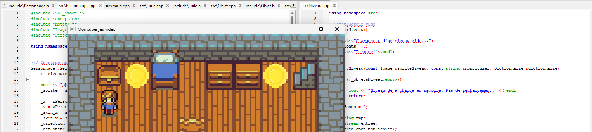

Projet Jeu Vidéo en C++
>Lien github vers le projet<
Dans le cadre du BUT Informatique, ce projet avait pour objectif de développer un jeu en C++ en s'appuyant sur une interface simplifiée de la bibliothèque SDL. Il combinait affichage graphique, gestion d'événements, lecture de fichiers et logique de jeu.
Le développement a mobilisé les principes de la programmation orientée objet, la mise en place d'animations et de collisions, ainsi que des algorithmes de recherche efficaces sur des données structurées. Le jeu charge des niveaux définis en fichiers texte, gère des interactions dynamiques avec des personnages, ennemis et objets, et propose une boucle de jeu complète avec win state et losing state.
Ce projet a permis de mettre en pratique de nombreuses compétences essentielles : conception modulaire en C++, manipulation de structures de données, traitement de fichiers, et développement d'une interface interactive réactive.